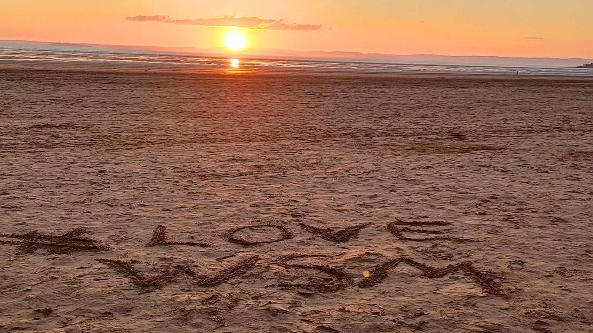
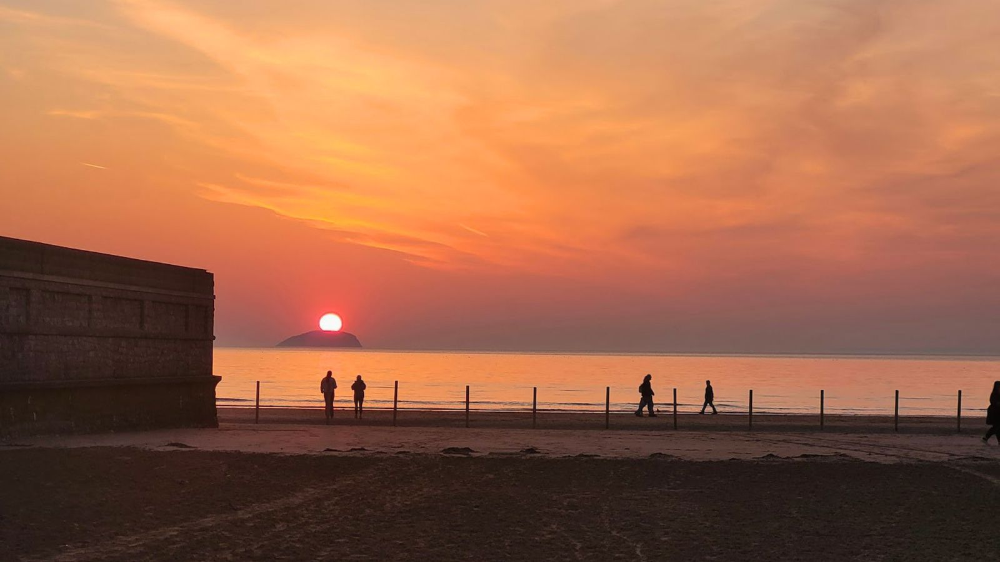

Got it — thanks for helping make the Weston Guide better.

Home · Weston Guide
The local's guide to Weston-super-Mare — where to eat, what to see, what's on, and how our town is being reborn. Made with love, by people who live here.
New to Weston?
Just moved here, or visiting for the first time? Welcome to one of the West Country's friendliest seaside towns — miles of golden sand, a proper Grand Pier, and sunsets over the Bristol Channel that stop you in your tracks.
The seafront is the heart of it all, from the donkeys and the beach to the Marine Lake and the Tropicana. Behind it, the High Street and town centre hold the shops, cafés and market. Look out to sea and you'll spot Steep Holm and Brean Down on the horizon.
Easy to reach, too — Weston has its own railway station and sits right off Junction 21 of the M5, with plenty of seafront and town-centre parking.
Good to know
💡 Did you know? Weston sits on the Bristol Channel — home to the second-highest tidal range on Earth. It's why the sea seems to disappear for miles at low tide.
Eat & drink
From fish & chips with your feet in the sand to independent cafés and a proper night out — Weston punches above its weight. Here's how we'd split a day of eating.
Grab a table with a sea view — from the Grand Pier's diners to restaurants looking straight out over the bay.
A seaside rite of passage. Best enjoyed on the prom with a wooden fork and a hungry seagull nearby.
Independent coffee shops and brunch spots dotted through the High Street and the arcades.
Ice cream on the front, doughnuts, cakes and bakes — Weston does a proper seaside sweet tooth.
Sit-down restaurants and a growing food scene for when you want to make an evening of it.
Relaxed spots with room for buggies, high chairs and little ones — no side-eye for a bit of noise.
Got a favourite we've missed? This is a living guide — tell us below and we'll keep it current.
See & do
Rain or shine, there's more to Weston than the beach — though the beach is a very good place to start.
The town's landmark — rides, arcades, go-karts, mini golf and food, all under one roof over the sea.
The world's largest helicopter collection — 80-odd aircraft, including a giant Super Frelon and a Russian gunship.
Miles of sand, deckchairs, kite-flying and the traditional seaside donkey ride.
A safe, tidal saltwater lake for paddling, swimming and paddleboarding right by the sea.
An open-air gallery of murals across town — including a Banksy 'Pinwheel'. Grab a coffee and go hunting.
Each winter Weston hosts the UK's largest undercover ice rink — a proper festive day out.
Two theatres, comedy nights and a lively live-music scene for when the sun goes down.
Bowling, indoor and outdoor crazy golf, a climbing centre and laser quest for when the weather turns.
📸 Spotted a mural or a hidden gem? Add it to the guide → We credit every submission we feature.
What's on
The dates worth putting in your calendar — the events that bring the whole town out year after year.
A parade from the Grand Pier onto the Beach Lawns, with arena displays, military & emergency-services exhibits, live music, food stalls and a funfair.
Food & drink festivals, live music and family events all along the front through the warmer months — peak Weston.
One of Somerset's spectacular illuminated carnivals — a dazzling procession of carts and lights that draws crowds from across the country.
Festive lights, markets and the UK's largest undercover ice rink turn the town centre into a proper winter day out.
Dates and details change year to year — always check the official Visit Weston-super-Mare and Town Council listings before you set off.
A brilliant café, a hidden gem, an event we've missed — tell us and we'll add it. Help build the guide.
Weston reborn
Weston is in the middle of its biggest transformation in a generation. The £20 million "Improving Weston" Placemaking Strategy is a decade-long effort to bring the seafront, High Street and heritage back to life — and it's already underway.
The Tropicana is being revived, with major works through 2026 ahead of a reopening. The much-loved Birnbeck Pier & Island — long derelict — is being carefully restored, with the ambition to reopen it to the public. Add improvements to the High Street, Grove Park and Marine Lake, and Weston was named a trending UK destination for 2026.

We're WBA — the local team behind this guide. We build the websites, media and marketing that help our town's businesses thrive. Let's grow yours.
Meet WBA →